Lab 3
The following is the lab report for lab 3 for Stephen Kanti Mahanty.
Introduction
Setting up modular code that reads a 4x4 keypad and displays the last two digits on a dual seven-segment display.
In this lab, a design was implemented on the FPGA to demonstrate the functionality of multiplexing seven-segment displays and collecting numbers from a keypad. The multiplexer was used to control two seven-segment displays, allowing them to display different numbers based on the state of the switches. Each display’s switches functioned independently and switched at a predetermined rate. The keypad scanner was implemented to read input from a 4x4 matrix keypad and display the pressed column on four LEDs. The pressed keys display on the seven-segment display, with the most recent key on the rightmost display.
Design and Testing Methodology
Explaining how I approached the design of this assignment from both a software and a hardware standpoint (as appropriate). Include how I tested your design.
The on-board high-speed oscillator (HSOSC) from the iCE40 UltraPlus primitive library was used to generate a clock signal at 24 MHz. Then, a counter was used to divide the high frequency clock signal down so that the blinking frequency could be easily visualized using one of the on-board LEDs. The design was developed using a simple clock divider module which drives the external LED.
All resistor calculations are the same from before. The important parts are the switching frequencies. The scanner frequency was set to 50 Hz to ensure that the scanner scans fast and that keypads could be pressed to deliver (pretty much) instantaneous speed to the display. The speed of the debouncer was set to be 4 ms since that is a common value of debouncing speed. The debouncer makes sure that any small change in the switch value gets negated. The FSMs are below
Click to reveal FSM
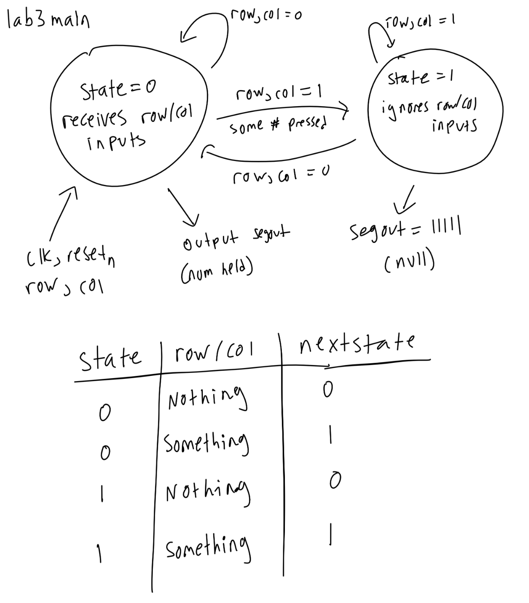
Click to reveal FSM
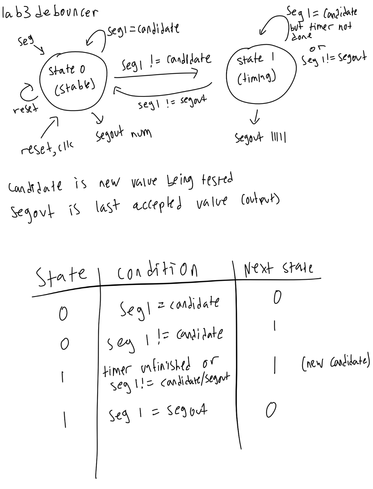
Click to reveal FSM
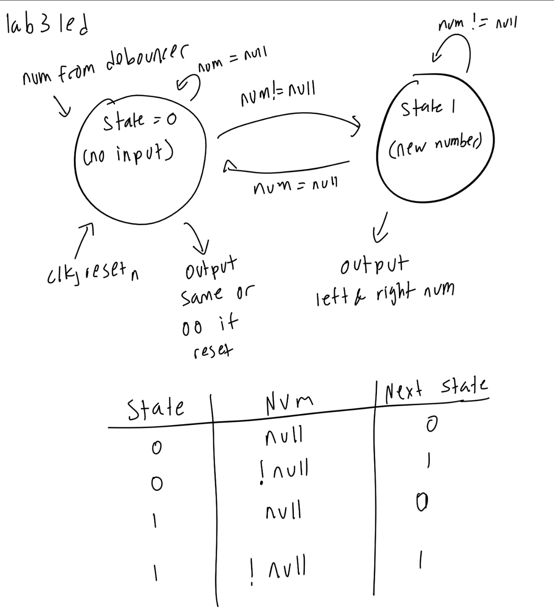
The design starts off with a synchronizer to synchronize rows and columns. This row and column value is sent to the decoder which collects the written keypad value and sends it to the debouncer. The debouncer works by starting a timer and making sure the number stays the same (if the number changes momentarily, the timer resets) and only outputs when the value is constant. The debouncer finally passes off this number to the seven-segment display, which stores the number and places it in the rightmost display. The design was then tested using a testbench simulation in QuestaSim to verify that the final output matched the initial keypresses.
Hardware was tested using physical displays, and was proven correct.
Technical Documentation:
Includes the link to a Git repository with the Verilog code, a block diagram of the design, and schematics of the circuits.
The source code for the project can be found in the associated Github repository.
Block Diagram
Click to reveal block diagram
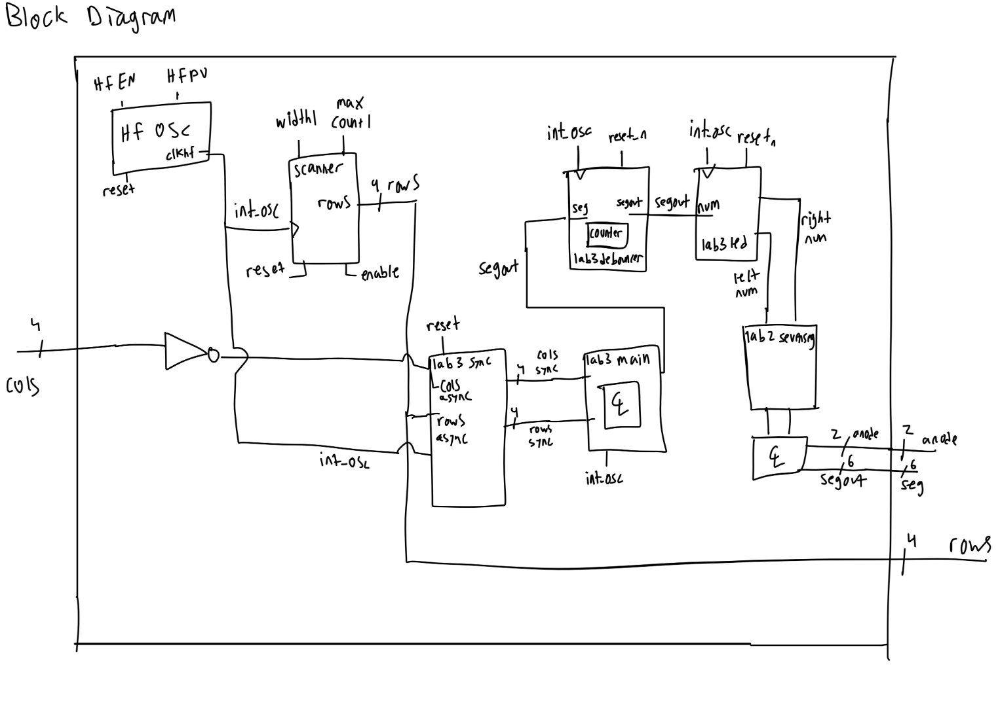
Click to reveal block diagram
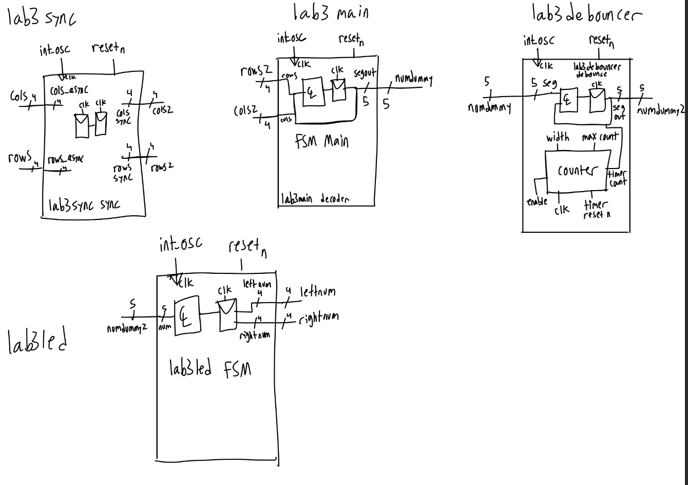
The block diagram in Figure 4 demonstrates the overall architecture of the design. The design consists of a block connected to the seven-segment dispaly and resistors connecting the seven-segment LEDs to the FPGA. The block diagram in Figure 5 expanded is a block diagram that expands upon the original block diagram and shows the in-depth look at each complicated module.
Schematic
Click to reveal schematic
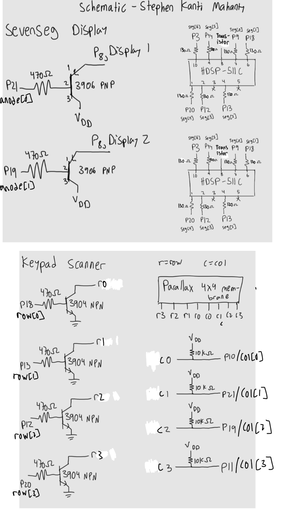
Figure 6 shows the physical layout of the design. It shows logic gates and connections between all the inputs and outputs. It is very similar to the one in lab 2, but without switches and external LEDs.
Results and Discussion
Did you accomplish all of the prescribed tasks? If not, what are the shortcomings? How might you address them given more time? As appropriate, how did the design perform (e.g., How fast/accurate/reliable was it?).
I did accomplish all of the prescribed tasks. The design successfully multiplexed two seven-segment displays using the on-board high-speed oscillator. The design also successfully controlled LEDs from the keypad and was able to scan the rows at a rate of 50 Hz per row.
Given more time, I would have liked to implement a more sophisticated display that can have more than two segments, sort of like a microwave counter.
Testbench Simulation
Click to reveal testbench
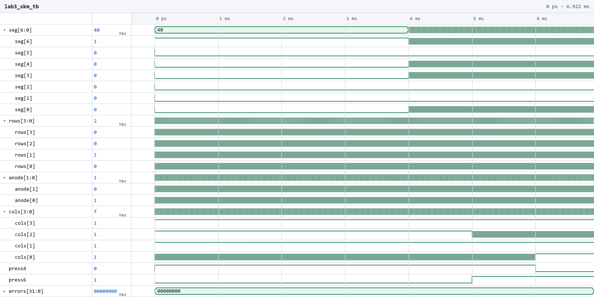
Click to reveal testbench
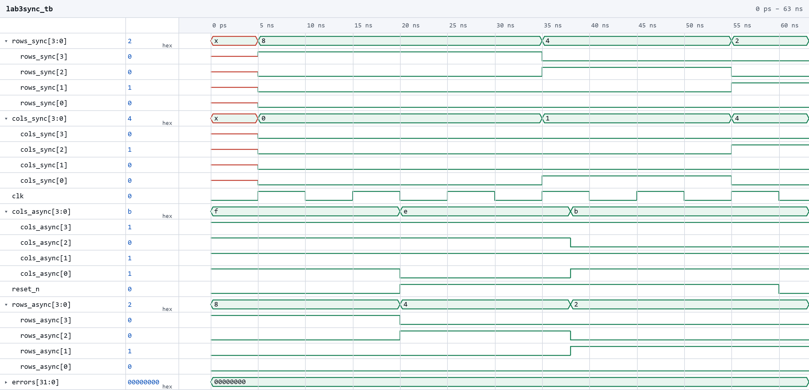
Click to reveal testbench
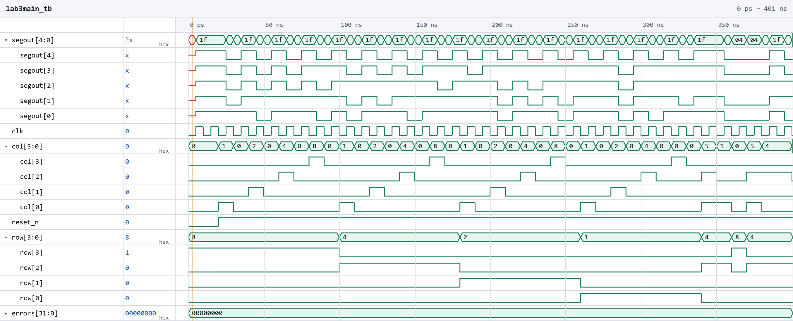
Click to reveal testbench
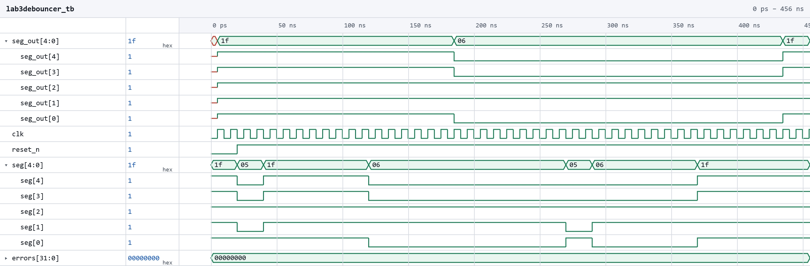
Click to reveal testbench
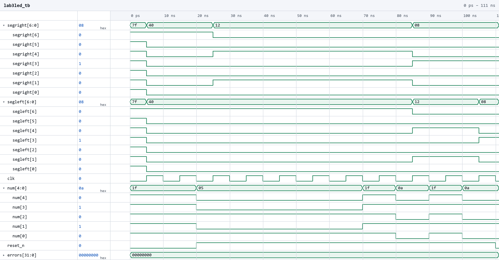
(Top) Screenshot of the QuestaSim simulation for the top-level module. (Second) Screenshot of the QuestaSim simulation for the synchronizer module. (Third) Screenshot of the QuestaSim simulation for the decoder module. (Fourth) Screenshot of the QuestaSim simulation for the debouncer module. (Bottom) Screenshot of the QuestaSim simulation for the LED module.
The design met all intended design objectives. ?@fig-testbench-top shows a screenshot of the top-level QuestaSim simulation. If a more precise output frequency was desired, a more sophisticated counter could be developed.
Conclusion
Briefly summarize what was done and how it performed. Also note how many hours you spent working on the lab.
The design successfully multiplexed two seven-segment displays using the on-board high-speed oscillator. I spent a total of eighteen (or nineteen) hours working on this lab.
AI Prototype Summary
I asked Google’s Gemini. It gave out the following:
Click to reveal response
Below is a complete, modular, and fully synthesizable SystemVerilog implementation tailored for the Lattice iCE40 UP5K FPGA.
Module 1: Clock Divider
Generates narrow single-cycle pulse tick flags at desired target frequencies (100 Hz for scanning and 1 kHz for multiplexing) without generating gated clocks.
// Generic Clock Divider generating single-cycle tick pulses
module clock_divider #(
parameter int CLK_FREQ = 20_000_000, // 20 MHz clock
parameter int TICK_FREQ = 100 // Target pulse frequency in Hz
)(
input logic clk,
input logic rst_n,
output logic tick
);
localparam int COUNT_MAX = (CLK_FREQ / TICK_FREQ) - 1;
localparam int WIDTH = $clog2(COUNT_MAX + 1);
logic [WIDTH-1:0] count;
always_ff @(posedge clk or negedge rst_n) begin
if (!rst_n) begin
count <= '0;
tick <= 1'b0;
end else begin
if (count >= COUNT_MAX) begin
count <= '0;
tick <= 1'b1;
end else begin
count <= count + 1'b1;
tick <= 1'b0;
end
end
end
endmoduleModule 2: Keypad Scanner Controller
Iterates active-low columns at ~100 Hz (a 10 ms period naturally filters contact bounce). Once a key is detected, it triggers a 1-cycle key_valid pulse and transitions to WAIT_RELEASE. In WAIT_RELEASE, all columns are pulled low (4'b0000), forcing any held switch to keep row_in active until all keys are released.
// 4x4 Matrix Keypad Scanner with Debounce-by-Design and Single-Key Registration
module keypad_scanner (
input logic clk,
input logic rst_n,
input logic scan_tick, // ~100–200 Hz enable tick
input logic [3:0] row_in, // Active-low row inputs (pull-up enabled)
output logic [3:0] col_out, // Active-low column outputs
output logic [3:0] key_code, // 4-bit decoded hex value
output logic key_valid // Single-clock pulse when key registered
);
// 2-stage synchronizer for asynchronous row inputs
logic [3:0] row_sync_1, row_sync;
always_ff @(posedge clk or negedge rst_n) begin
if (!rst_n) begin
row_sync_1 <= 4'b1111;
row_sync <= 4'b1111;
end else begin
row_sync_1 <= row_in;
row_sync <= row_sync_1;
end
end
// FSM State Definition
typedef enum logic {
STATE_SCAN = 1'b0,
STATE_WAIT_RELEASE = 1'b1
} state_e;
state_e state;
logic [1:0] col_idx;
// Output driver assignment
always_comb begin
if (state == STATE_WAIT_RELEASE)
col_out = 4'b0000; // Pull all columns low to detect any held key
else
col_out = ~(4'b0001 << col_idx); // Drive active column low
end
// Key Matrix Decoding Function
function automatic logic [3:0] decode_hex(input logic [1:0] col, input logic [3:0] row);
case ({col, row})
// Column 0
6'b00_1110: decode_hex = 4'h1;
6'b00_1101: decode_hex = 4'h4;
6'b00_1011: decode_hex = 4'h7;
6'b00_0111: decode_hex = 4'hE; // '*' key -> E
// Column 1
6'b01_1110: decode_hex = 4'h2;
6'b01_1101: decode_hex = 4'h5;
6'b01_1011: decode_hex = 4'h8;
6'b01_0111: decode_hex = 4'h0;
// Column 2
6'b10_1110: decode_hex = 4'h3;
6'b10_1101: decode_hex = 4'h6;
6'b10_1011: decode_hex = 4'h9;
6'b10_0111: decode_hex = 4'hF; // '#' key -> F
// Column 3
6'b11_1110: decode_hex = 4'hA;
6'b11_1101: decode_hex = 4'hB;
6'b11_1011: decode_hex = 4'hC;
6'b11_0111: decode_hex = 4'hD;
default: decode_hex = 4'h0;
endcase
endfunction
// FSM State Machine
always_ff @(posedge clk or negedge rst_n) begin
if (!rst_n) begin
state <= STATE_SCAN;
col_idx <= 2 me;
key_code <= 4'h0;
key_valid <= 1'b0;
end else begin
key_valid <= 1'b0; // Default pulse low
if (scan_tick) begin
case (state)
STATE_SCAN: begin
if (row_sync != 4'b1111) begin
key_code <= decode_hex(col_idx, row_sync);
key_valid <= 1'b1;
state <= STATE_WAIT_RELEASE;
end else begin
col_idx <= col_idx + 1'b1;
end
end
STATE_WAIT_RELEASE: begin
// Release check: true only when all matrix keys are unpressed
if (row_sync == 4'b1111) begin
state <= STATE_SCAN;
col_idx <= 2'd0;
end
end
endcase
end
end
end
endmoduleModule 3: 7-Segment Decoder & Time-Multiplexer
Decodes hex values to active-low 7-segment patterns (seg_out[6:0] corresponding to segments a through g) and switches between digits at 1 kHz to eliminate flicker and balance LED brightness.
// 7-Segment Hexadecimal Decoder
module seven_seg_decoder (
input logic [3:0] hex_digit,
output logic [6:0] seg_out // Active-low segments: {a, b, c, d, e, f, g}
);
always_comb begin
case (hex_digit)
4'h0: seg_out = 7'b000_0001; // 0
4'h1: seg_out = 7'b100_1111; // 1
4'h2: seg_out = 7'b001_0010; // 2
4'h3: seg_out = 7'b000_0110; // 3
4'h4: seg_out = 7'b100_1100; // 4
4 me: seg_out = 7'b010_0100; // 5
4'h6: seg_out = 7'b010_0000; // 6
4'h7: seg_out = 7'b000_1101; // 7
4'h8: seg_out = 7'b000_0000; // 8
4'h9: seg_out = 7'b000_0100; // 9
4'hA: seg_out = 7'b000_1000; // A
4'hB: seg_out = 7'b110_0000; // b
4'hC: seg_out = 7'b011_0001; // C
4'hD: seg_out = 7'b100_0010; // d
4'hE: seg_out = 7'b011_0000; // E
4'hF: seg_out = 7'b011_1000; // F
default: seg_out = 7'b111_1111;
endcase
end
endmodule
// 2-Digit Display Time-Multiplexer
module display_multiplexer (
input logic clk,
input logic rst_n,
input logic mux_tick, // ~1 kHz multiplexing pulse
input logic [3:0] digit_old, // Older key digit (Digit 1 - Left)
input logic [3:0] digit_new, // Latest key digit (Digit 0 - Right)
output logic [1:0] digit_sel, // Active-low digit selector
output logic [6:0] seg_out // Active-low segment lines
);
logic active_digit; // 0 = Digit 1 (old), 1 = Digit 0 (new)
logic [3:0] current_hex;
always_ff @(posedge clk or negedge rst_n) begin
if (!rst_n) begin
active_digit <= 1'b0;
end else if (mux_tick) begin
active_digit <= ~active_digit;
end
end
always_comb begin
if (active_digit == 1'b0) begin
current_hex = digit_old;
digit_sel = 2'b10; // Select Left Digit
end else begin
current_hex = digit_new;
digit_sel = 2'b01; // Select Right Digit
end
end
seven_seg_decoder u_decoder (
.hex_digit (current_hex),
.seg_out (seg_out)
);
endmoduleTop-Level Module
Combines the subsystems, shift register for key history, and an option to instantiate the Lattice iCE40 SB_HFOSC primitive.
// Top Level Module for Keypad Reader & Display
module top_keypad_display #(
parameter int CLK_FREQ = 20_000_000, // Nominal system clock frequency
parameter int SCAN_FREQ = 100, // Keypad scan clock (~100 Hz)
parameter int MUX_FREQ = 1000 // Display refresh rate (~1 kHz)
)(
input logic clk_in, // External clock input (if SB_HFOSC not used)
input logic rst_n, // Active-low reset
input logic [3:0] row_in, // Keypad active-low rows
output logic [3:0] col_out, // Keypad active-low columns
output logic [1:0] digit_sel, // Active-low digit enables
output logic [6:0] seg_out // Active-low segment outputs {a..g}
);
logic sys_clk;
assign sys_clk = clk_in;
/*
* Note: To use the iCE40 UP5K internal high-speed oscillator directly,
* uncomment the following block and disconnect 'clk_in':
*
* SB_HFOSC #(
* .CLKHF_DIV("0b10") // "0b00"=48MHz, "0b01"=24MHz, "0b10"=12MHz, "0b11"=6MHz
* ) u_hfosc (
* .CLKHFPU(1'b1),
* .CLKHFEN(1'b1),
* .CLKHF (sys_clk)
* );
*/
logic scan_tick;
logic mux_tick;
logic [3:0] digit_old;
logic [3:0] digit_new;
logic [3:0] scanned_key;
logic key_valid;
// Clock Dividers
clock_divider #(.CLK_FREQ(CLK_FREQ), .TICK_FREQ(SCAN_FREQ)) u_clk_div_scan (
.clk (sys_clk),
.rst_n (rst_n),
.tick (scan_tick)
);
clock_divider #(.CLK_FREQ(CLK_FREQ), .TICK_FREQ(MUX_FREQ)) u_clk_div_mux (
.clk (sys_clk),
.rst_n (rst_n),
.tick (mux_tick)
);
// Keypad Scanner Instance
keypad_scanner u_keypad_scanner (
.clk (sys_clk),
.rst_n (rst_n),
.scan_tick (scan_tick),
.row_in (row_in),
.col_out (col_out),
.key_code (scanned_key),
.key_valid (key_valid)
);
// Key History Shift Register
always_ff @(posedge sys_clk or negedge rst_n) begin
if (!rst_n) begin
digit_old <= 4'h0;
digit_new <= 4'h0;
end else if (key_valid) begin
digit_old <= digit_new; // Shift current key to older digit
digit_new <= scanned_key; // Register newly pressed key
end
end
// Multiplexed Display Driver Instance
display_multiplexer u_display_mux (
.clk (sys_clk),
.rst_n (rst_n),
.mux_tick (mux_tick),
.digit_old (digit_old),
.digit_new (digit_new),
.digit_sel (digit_sel),
.seg_out (seg_out)
);
endmoduleDesign Highlights
- Metastability Mitigation: Asynchronous active-low
row_inkeypad inputs pass through a 2-stage flip-flop synchronizer (row_sync) before sampling. - Debounce-by-Design: The state machine evaluates matrix state using the 100 Hz scan tick. Because individual step intervals (10 ms) exceed mechanical switch bounce durations (~2–5 ms), contact bounce is inherently filtered without adding complex counter-based debouncers.
- Single-Press Lockout: When a key press is registered, the FSM immediately sets all columns low (
col_out = 4'b0000) and waits forrow_sync == 4'b1111before returning to the scan state. This prevents key repetitions or multi-press registrations until the user fully releases the keypad. - Flicker-Free Display Multiplexing: Displays alternate between the older key (
digit_old) and the newest key (digit_new) at 1 kHz, providing continuous duty-cycle splitting (50/50) for uniform LED brightness and no visible ghosting.
The second part is below:
Click to reveal Prompt 1
The following SystemVerilog module implements a debounced, single-pulse key registration FSM designed for synthesis on a Lattice iCE40 UP5K FPGA.
All outputs (key_code_out and key_valid_pulse) are registered directly inside the synchronous state machine logic to guarantee zero glitching.
// Module: keypad_one_shot
// Target: Lattice iCE40 UP5K
// Description: Debounces matrix keypad detections, captures valid key codes,
// and generates a single-cycle pulse per unique key press event.
module keypad_one_shot #(
parameter int CLK_FREQ_HZ = 12_000_000, // Default 12 MHz (iCE40 HFOSC)
parameter int DEBOUNCE_MS = 10, // Debounce period in milliseconds
parameter int DEBOUNCE_CYCLES = (CLK_FREQ_HZ / 1000) * DEBOUNCE_MS
)(
input logic clk, // System clock
input logic rst_n, // Active-low asynchronous reset
input logic raw_key_valid, // High when keypad scan detects ANY key down
input logic [3:0] raw_key_code, // Unlatched 4-bit key code from scanner
output logic [3:0] key_code_out, // Captured 4-bit key code
output logic key_valid_pulse // 1-cycle active-high pulse on new press
);
// Enumerated FSM states
typedef enum logic [1:0] {
ST_IDLE, // Waiting for a key press
ST_DEBOUNCE_PRESS, // Validating key press debounce duration
ST_HELD, // Key registered; waiting for key release
ST_DEBOUNCE_RELEASE // Validating key release debounce duration
} state_t;
state_t state;
// Counter for debounce timer calculation
localparam int TIMER_WIDTH = $clog2(DEBOUNCE_CYCLES);
logic [TIMER_WIDTH-1:0] timer;
// Single-process synchronous FSM with registered, glitch-free outputs
always_ff @(posedge clk or negedge rst_n) begin
if (!rst_n) begin
state <= ST_IDLE;
timer <= '0;
key_code_out <= 4'h0;
key_valid_pulse <= 1'b0;
end else begin
// Default: Keep registration pulse high for only 1 clock cycle
key_valid_pulse <= 1'b0;
case (state)
ST_IDLE: begin
timer <= '0;
if (raw_key_valid) begin
state <= ST_DEBOUNCE_PRESS;
end
end
ST_DEBOUNCE_PRESS: begin
if (!raw_key_valid) begin
// Noise/bounce detected before filter expired; drop back to idle
state <= ST_IDLE;
timer <= '0;
end else if (timer == DEBOUNCE_CYCLES - 1) begin
// Debounce complete: capture code and issue 1-cycle pulse
state <= ST_HELD;
timer <= '0;
key_code_out <= raw_key_code;
key_valid_pulse <= 1'b1;
end else begin
timer <= timer + 1'b1;
end
end
ST_HELD: begin
timer <= '0;
// Ignore new/changed key codes while a key remains active
if (!raw_key_valid) begin
state <= ST_DEBOUNCE_RELEASE;
end
end
ST_DEBOUNCE_RELEASE: begin
if (raw_key_valid) begin
// Contact bounce on release; return to held state
state <= ST_HELD;
timer <= '0;
end else if (timer == DEBOUNCE_CYCLES - 1) begin
// Release verified; ready for the next key press
state <= ST_IDLE;
timer <= '0;
end else begin
timer <= timer + 1'b1;
end
end
default: state <= ST_IDLE;
endcase
end
end
endmoduleModule Operation & Interface
- **
raw_key_valid&raw_key_code**: Fed by your keypad scanning hardware/module.raw_key_validshould stay high as long as any valid row/column intersection is closed. - Debounce Counter: Operates at the clock speed passed to
CLK_FREQ_HZ. Re-evaluates stability continuously during transitions to filter out switch contact bounce noise on both press and release. - Single-Cycle Output:
key_valid_pulsegoes high for exactly one clock edge immediately after the press debounce timer completes. It clears automatically on the subsequent cycle regardless of how long the key remains physically held. - Hold Interlock: Shifts to
ST_HELDfollowing activation. Any changes in input key code while inST_HELDare ignored until all keys are released and debounced viaST_DEBOUNCE_RELEASE.
Click to reveal Prompt 2
The following SystemVerilog module continuously scans a 4x4 matrix keypad using active-low column drives and active-low row samples. It integrates a 2-stage synchronizer to prevent metastability from asynchronous mechanical switch bounces and freezes column scanning on detection to output a stable key code and status flag while held.
// Module: keypad_scanner
// Target: Lattice iCE40 UP5K
// Description: Scans a 4x4 matrix keypad by cycling active-low column outputs
// and sampling active-low row inputs. Outputs latched key code
// and valid flag while key remains pressed.
module keypad_scanner #(
parameter int CLK_FREQ_HZ = 12_000_000, // Default 12 MHz (iCE40 HFOSC)
parameter int SCAN_RATE_HZ = 1_000 // Column scan frequency (1 kHz)
)(
input logic clk, // System clock
input logic rst_n, // Active-low asynchronous reset
input logic [3:0] row, // Active-low row inputs (pulled high)
output logic [3:0] col, // Active-low column drivers
output logic [3:0] raw_key_code, // Decoded 4-bit key code
output logic raw_key_valid // High while any key is pressed
);
localparam int SCAN_CYCLES = CLK_FREQ_HZ / SCAN_RATE_HZ;
localparam int TIMER_WIDTH = $clog2(SCAN_CYCLES);
logic [TIMER_WIDTH-1:0] scan_timer;
logic scan_tick;
logic [1:0] col_select;
// 2-stage input synchronizer for external row inputs
logic [3:0] row_sync_0, row_sync;
always_ff @(posedge clk or negedge rst_n) begin
if (!rst_n) begin
row_sync_0 <= 4'b1111;
row_sync <= 4'b1111;
end else begin
row_sync_0 <= row;
row_sync <= row_sync_0;
end
end
// Scan timer generating periodic scan ticks
always_ff @(posedge clk or negedge rst_n) begin
if (!rst_n) begin
scan_timer <= '0;
scan_tick <= 1'b0;
end else begin
if (scan_timer == SCAN_CYCLES - 1) begin
scan_timer <= '0;
scan_tick <= 1'b1;
end else begin
scan_timer <= scan_timer + 1'b1;
scan_tick <= 1 meb0;
end
end
end
// Active-low 1-of-4 column decoder
always_comb begin
case (col_select)
2'd0: col = 4'b1110;
2'd1: col = 4'b1101;
2'd2: col = 4'b1011;
2'd3: col = 4'b0111;
default: col = 4'b1111;
endcase
end
// Priority encoder for active-low row input
logic [1:0] row_idx;
always_comb begin
casez (row_sync)
4'b???0: row_idx = 2'd0;
4'b??01: row_idx = 2'd1;
4'b?011: row_idx = 2'd2;
4'b0111: row_idx = 2'd3;
default: row_idx = 2'd0;
endcase
end
// Standard 4x4 matrix key code lookup table
// Layout:
// [1] [2] [3] [A]
// [4] [5] [6] [B]
// [7] [8] [9] [C]
// [*] [0] [#] [D] (* = 0xE, # = 0xF)
logic [3:0] decoded_code;
always_comb begin
case ({row_idx, col_select})
4'b00_00: decoded_code = 4'h1; // R0, C0 -> 1
4'b00_01: decoded_code = 4'h2; // R0, C1 -> 2
4'b00_10: decoded_code = 4'h3; // R0, C2 -> 3
4'b00_11: decoded_code = 4'hA; // R0, C3 -> A
4'b01_00: decoded_code = 4'h4; // R1, C0 -> 4
4'b01_01: decoded_code = 4'h5; // R1, C1 -> 5
4'b01_10: decoded_code = 4'h6; // R1, C2 -> 6
4'b01_11: decoded_code = 4'hB; // R1, C3 -> B
4'b10_00: decoded_code = 4'h7; // R2, C0 -> 7
4'b10_01: decoded_code = 4'h8; // R2, C1 -> 8
4'b10_10: decoded_code = 4'h9; // R2, C2 -> 9
4'b10_11: decoded_code = 4'hC; // R2, C3 -> C
4'b11_00: decoded_code = 4'hE; // R3, C0 -> * (E)
4'b11_01: decoded_code = 4'h0; // R3, C1 -> 0
4'b11_10: decoded_code = 4'hF; // R3, C2 -> # (F)
4'b11_11: decoded_code = 4'hD; // R3, C3 -> D
default: decoded_code = 4'h0;
endcase
end
// Sequential scanner FSM logic
always_ff @(posedge clk or negedge rst_n) begin
if (!rst_n) begin
col_select <= 2'd0;
raw_key_code <= 4'h0;
raw_key_valid <= 1'b0;
end else if (scan_tick) begin
if (row_sync != 4'b1111) begin
// Key active in current column: freeze scan and hold status
raw_key_valid <= 1'b1;
raw_key_code <= decoded_code;
end else begin
// No key active: advance column drive and clear valid signal
raw_key_valid <= 1'b0;
col_select <= col_select + 1'b1;
end
end
end
endmoduleModule Design Details
- Column Freezing on Press: When a key is detected in the active column (
row_sync != 4'b1111), the scanner stops incrementingcol_select. This keeps the active column driven low continuously, ensuringraw_key_validstays high without toggling until the key is physically released. - Synchronized Inputs: Dual flip-flop buffers (
row_sync_0,row_sync) condition asynchronous pin transitions, preventing FPGA metastability issues when keys are toggled during clock transitions. - Standard Matrix Mapping: Uses standard hex keypad encoding:
1-9,A-D,0,*(mapped to0xE), and#(mapped to0xF). - Direct Compatibility: The
raw_key_validandraw_key_codeoutputs connect directly into thekeypad_one_shotregistration FSM.
Click to reveal Prompt 3
The following top-level SystemVerilog module targets the Lattice iCE40 UP5K FPGA. It instantiates the internal SB_HFOSC oscillator configured for 12 MHz, connects the scanner and one-shot modules, implements a 2-stage key shift register, and cleanly multiplexes a 2-digit seven-segment display.
// Module: keypad_top
// Target: Lattice iCE40 UP5K
// Description: Top-level module integrating keypad scanner, one-shot registration,
// 2-key shift register, and a 1 kHz multiplexed 7-segment display driver.
module keypad_top (
input logic rst_n, // External active-low reset pin
input logic [3:0] keypad_row, // Active-low matrix keypad rows
output logic [3:0] keypad_col, // Active-low matrix keypad columns
output logic [1:0] digit_sel, // Active-low digit selects (2'b10: Left, 2'b01: Right)
output logic [6:0] seg // Segment outputs (a-g) from assumed sevenSegment decoder
);
// ------------------------------------------------------------------------
// 1. Internal High-Frequency Oscillator (SB_HFOSC Primitive)
// ------------------------------------------------------------------------
logic clk;
// iCE40 UP5K Hard IP Oscillator: CLKHF_DIV = "0b10" yields 12 MHz output
SB_HFOSC #(
.CLKHF_DIV("0b10")
) u_hfosc (
.CLKHFPU(1'b1), // Power up oscillator
.CLKHFEN(1'b1), // Enable clock output
.CLKHF(clk) // 12 MHz clock output
);
// ------------------------------------------------------------------------
// 2. Internal Reset Synchronizer
// ------------------------------------------------------------------------
logic sys_rst_n_0, sys_rst_n;
always_ff @(posedge clk or negedge rst_n) begin
if (!rst_n) begin
sys_rst_n_0 <= 1'b0;
sys_rst_n <= 1'b0;
end else begin
sys_rst_n_0 <= 1'b1;
sys_rst_n <= sys_rst_n_0;
end
end
// ------------------------------------------------------------------------
// 3. Submodule Interconnect Signals
// ------------------------------------------------------------------------
logic [3:0] raw_key_code;
logic raw_key_valid;
logic [3:0] registered_key_code;
logic key_valid_pulse;
// ------------------------------------------------------------------------
// 4. Keypad Scanner Submodule
// ------------------------------------------------------------------------
keypad_scanner #(
.CLK_FREQ_HZ(12_000_000),
.SCAN_RATE_HZ(1_000)
) u_scanner (
.clk(clk),
.rst_n(sys_rst_n),
.row(keypad_row),
.col(keypad_col),
.raw_key_code(raw_key_code),
.raw_key_valid(raw_key_valid)
);
// ------------------------------------------------------------------------
// 5. One-Shot Registration / Debouncer Submodule
// ------------------------------------------------------------------------
keypad_one_shot #(
.CLK_FREQ_HZ(12_000_000),
.DEBOUNCE_MS(10)
) u_one_shot (
.clk(clk),
.rst_n(sys_rst_n),
.raw_key_valid(raw_key_valid),
.raw_key_code(raw_key_code),
.key_code_out(registered_key_code),
.key_valid_pulse(key_valid_pulse)
);
// ------------------------------------------------------------------------
// 6. 2-Digit Shift Register Logic (Older <= Recent, Recent <= New)
// ------------------------------------------------------------------------
logic [3:0] digit_left_older; // Left digit (Older key)
logic [3:0] digit_right_newer; // Right digit (Most recent key)
always_ff @(posedge clk or negedge sys_rst_n) begin
if (!sys_rst_n) begin
digit_left_older <= 4'h0;
digit_right_newer <= 4'h0;
end else if (key_valid_pulse) begin
digit_left_older <= digit_right_newer;
digit_right_newer <= registered_key_code;
end
end
// ------------------------------------------------------------------------
// 7. Display Multiplexer & Equal Brightness Refresh Logic
// ------------------------------------------------------------------------
// 12 MHz / 6000 cycles = 2 kHz digit swap rate (1 kHz total frame refresh rate)
localparam int MUX_DIV_CYCLES = 6_000;
localparam int MUX_WIDTH = $clog2(MUX_DIV_CYCLES);
logic [MUX_WIDTH-1:0] mux_timer;
logic mux_select; // 0 = Left Digit (Older), 1 = Right Digit (Newer)
always_ff @(posedge clk or negedge sys_rst_n) begin
if (!sys_rst_n) begin
mux_timer <= '0;
mux_select <= 1'b0;
end else begin
if (mux_timer == MUX_DIV_CYCLES - 1) begin
mux_timer <= '0;
mux_select <= ~mux_select; // Alternate digits with exact 50% duty cycle
end else begin
mux_timer <= mux_timer + 1'b1;
end
end
end
// Mux input data selection
logic [3:0] active_hex_digit;
always_comb begin
active_hex_digit = (mux_select == 1'b0) ? digit_left_older : digit_right_newer;
end
// Assumed external decoder instantiation: 4-bit hex input -> 7-segment output
logic [6:0] decoded_seg_raw;
sevenSegment u_seven_seg_decoder (
.hex(active_hex_digit),
.seg(decoded_seg_raw)
);
// Synchronous output registers to avoid ghosting during display switching
always_ff @(posedge clk or negedge sys_rst_n) begin
if (!sys_rst_n) begin
digit_sel <= 2'b11; // Disable both digits (Active-Low)
seg <= 7'b111_1111; // Turn off all segments
end else begin
// Active-low digit enablement guaranteeing non-overlapping select states
digit_sel <= (mux_select == 1'b0) ? 2'b10 : 2'b01;
seg <= decoded_seg_raw;
end
end
endmoduleKey Hardware Considerations
- Oscillator Selection: Utilizes the native iCE40
SB_HFOSCprimitive directly without needing external crystal routing. Hard-coded parameterCLKHF_DIV = "0b10"produces a 12 MHz clock output. - Key Shift Flow: The display shift register ignores scanner activity during continuous holding and updates
digit_left_olderanddigit_right_newerstrictly on the single-cyclekey_valid_pulseassertion. - Display Refresh & Anti-Ghosting:
- Cycles between the left and right digits every 6,000 clock cycles (\(12\text{ MHz} / 6000 = 2\text{ kHz}\) swap rate, giving a \(1\text{ kHz}\) refresh rate per digit).
- Generates a strict 50% time split between digits to maintain identical brightness without visual flicker.
- Outputs (
digit_selandseg) are registered synchronously to prevent combinational decoding glitches/ghosting while multiplexing lines.
The code was correct and worked fine in Radiant, and was able to synthesize properly. The quality of the output was good, and the code was well-structured and easy to understand. The code used a high-frequency oscillator to generate a clock signal, which was used to detect the keypad and add it to the seven segment display. I think the AI is pretty useful for testing these pieces of code and getting it correct.
I think that the monolithic prompt was worse than the decomposed prompts because each decomposed prompt was able to correctly follow each FSM in more detail and was also stricter to each FSM, further following the specs. Modularizing the prompts also improved readability since it was a lot easier to look at each FSM and read it with correct variable names (while monolithic values were more general since it was all in one big prompt). The FSM structures were generally helpful and simple to understand, but there were definitely some advanced structures in the code that I did not know exactly.
I think using an LLM to help me code is very useful, as I can analyze the code and learn from it whilst being more productive. I can also use it to help me debug my code, as it can point out errors and suggest fixes. Overall, I think using an LLM to help me code is a unique idea and I may plan to use it in the future. In the future, I will try to optimize my LLM output to conserve tokens whilst also making proper statements.
Consider discussing:
How did the monolithic prompt perform versus the decomposed prompts?
Did modularizing the prompts improve correctness, synthesis success, or readability?
Did Prototype A modularize the design in the way you expected without explicit instruction?
What FSM structures and SystemVerilog idioms did the LLM use that were helpful or surprising?
What issues did you encounter (e.g., keypad code mapping, active‑low row/col logic, debounce‑by‑design), and how did the LLM handle them?
What would you do differently the next time you use an LLM in your workflow?